「强身健体」
-

美敦力胰岛素泵·售后服务
“糖尿病人可以减肥、健身。多食多餐多运动，少吃则少打胰岛素。”
-

省级医院·糖尿病科医生
“在病情控制稳定的情况下，要做有氧运动，最好的运动是步行。”
-

糖尿病患者·带病10年
“我的建议是，餐后40分钟之内不要坐着不动。可以来回走动或者提着墙站都是可以的。建议餐后一小时运动，效果相对好。我们一般做的运动是快走和骑单车。”
小贴士
· 参考方面 ·
-

快步走
一般为1-1.5个小时走完10000步。除此以外，还有一些软标准，比如走前需活动筋骨， 保证全身肌肉和骨骼得到预热。走完之后要保证自己是微微发热，微微出汗，如果发现自己开始大汗淋漓，说明需要降低速度和步伐幅度
-

慢跑
慢跑较为轻松，属于中等强度的运动，适合于年轻、身体条件较好，有一定锻炼基础、无并发心血管疾病的糖尿病患者。常规慢跑速度一般为100~200米/分钟
-

游泳
游泳可以提高免疫力及减肥。游泳时，水的波浪对机体不断拍打可起到全身按摩的作用，从而促进血液循环，改善胰岛素抵抗，加快人体新陈代谢，促进对营养物质的消化和吸收能力，进而增强体质，提高免疫力
-

自行车
骑自行车运动量一定要适中。每次骑车至少30分钟，但不要超过60分钟，最好40分钟为宜，因为只运动5到10分钟，达不到降糖的目的，超过40分钟，虽然血糖可以降低，但机体容易疲劳甚至出现低血糖风险。运动量不能过于激烈，运动强度以浑身发热、出汗但不大汗淋漓为宜，脉搏应控制在“170—年龄”次/分最好

小结
关于有氧运动，美国糖尿病学会（ADA）建议的有强度为：运动时心率达到最大心率（220减去年龄）的60-75%（用VO2max推算的对应心率）。监控心率可以用心率表。一周运动总共时间不少于150分钟。适当运动能够帮助治疗糖尿病以及缓解一些症状。具体情况应该与医生商量。锻炼效果和需求也因人而异